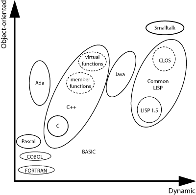
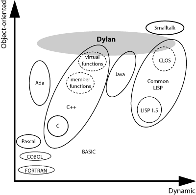

1.1 Comparison of Dylan and other programming languages
Each language in wide use for applications has advantages and disadvantages. One way to compare languages is to imagine them arrayed along two axes. One axis ranges from procedural to object-oriented languages. The other axis ranges from static to dynamic languages. Figure 1.1 shows the comparison of several popular computer-programming languages on a graph.
A program in a procedural language consists of functions operating on data. The programming task is to choose the best available representation for data, and the best algorithms for manipulating the data. Languages near the procedural end of the axis include C, FORTRAN, and COBOL.
A program in an object-oriented language consists of objects, categorized by class, that combine data and behavior. The programming task is to define the best class relations to represent objects, and the best set of operations that objects of related classes support. Languages near the object-oriented end of the axis include C++, Java, Smalltalk, and the Common LISP Object System (CLOS).
A static language requires most program structure -- such as the types of variables and function arguments -- to be determined at compile time. The compiler can detect errors and optimize performance at the cost of run-time flexibility. Languages near the static end of the axis include C, C++, and FORTRAN.
A dynamic language allows you to make more run-time changes to program structure, such as passing arguments of different types to the same function and, in some languages, defining new types or classes. A dynamic environment might allow run-time definition and linking. Languages near the dynamic end of the axis include Common LISP and Smalltalk.
In reality, few languages in commercial use are purely procedural or object oriented, purely static or dynamic. In fact, the trend has been to add missing elements from one pole to languages that are close to the opposite pole. C++ adds object-oriented features to C; dynamic linking is becoming more common; LISP and Smalltalk vendors have made applications smaller and more efficient. This work, however, is hampered by the need to maintain compatibility with features of the language that were not designed with objects, dynamism, or performance in mind.
|  |
Dylan, in contrast, is a new language that integrates the best ideas from object-oriented, procedural, dynamic, and static languages, while avoiding many of the drawbacks. Figure 1.2 shows where Dylan fits on the graph.
|  |
Dylan's goals are simple:
Promote modular, reusable, component-oriented programs.
Support powerful and familiar procedural programming.
Encourage rapid and productive development of programs.
Permit delivery of safe, efficient, compact applications.
Let's take a brief look at features of Dylan that support these goals.